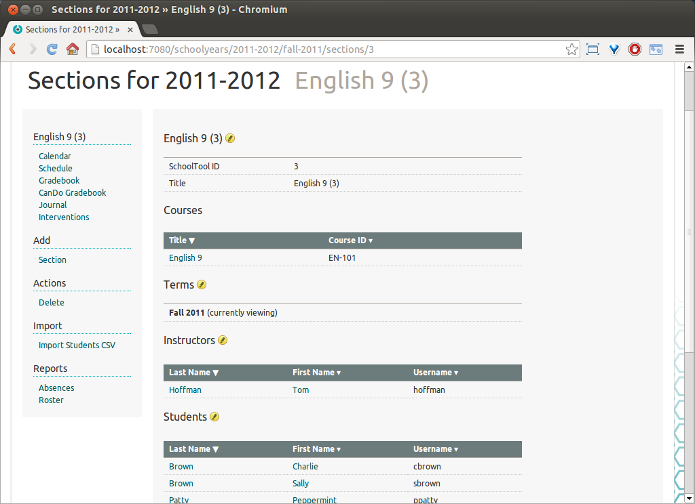

Managing Multiple Years and Terms¶
Multiple Years¶
Certain types of data are “contained in” school years, as if they were a folder or file directory. This tends to be data which is consistent within a school year but might be changed from one school year to another.
Objects contained by or directly associated with one school year:
Groups and group memberships
Courses
Sections and section memberships
Gradebooks and other section-specific data
Timetables
Deployed Report Sheets
Objects “outside” school years:
People and demographic information
Contacts
Resources
Report Sheet Templates
Score Systems
Grade levels
Activity categories
Skills
School Info
Years are indicated by tabs on the School and other management pages.
Note that some objects that are not “contained” by years, such as People, are still listed under each year tab.
To create a new year, select Add: School Year:
Since in this case there is already an active school year, you are presented with the option of copying some data over to it. You can copy the groups; the default groups are always created in a new year, and you can choose whether or not you would like to copy the members of the group. In some cases, it will be easiest to copy the members and then edit the changes in the new year. In other cases, it may be easier to start fresh.
In this case, we’ll copy our old data over and create a new year:
Now we have two years, with 2011-2012 being “active”
And two tabs on the main School page:
By default, the “active” year will be the selected tab. Click Actions: Activate New Year to change this:
And so, 2012-2013 is now selected.
Note that when you navigate away from the School page to another management page, SchoolTool should remember which year you were looking at, whether or not it is the “active” year. The School tab will always take you to the “active” year.
In future releases, “inactive” years will have different permissions than “active” ones.
Sections in Multiple Terms¶
In Creating Sections, we created a section spanning two terms. This is actually implemented as two separate “linked” sections, one in each term. For the purposes of reporting and the teacher and student interface, they are treated as one section. When you make changes to a section, such as adding or removing students, the changes are propogated to later linked sections, but not to sections in terms preceeding the one edited.
You can also extend single term sections to additional terms, unlink linked sections, and link two unlinked sections.
To demonstrate, first we will create a single-term section:

To extend this section to an additional term, click the edit pencil icon next to Terms:
Click Extend to This Term under Spring 2012:
Click Extend:
Now you have a linked section in the Spring 2012 term.
As an example of unlinking, we’ll click Unlink in the Spring 2012 term:
Click Unlink. Now we can navigate via Sections to the unlinked Spring 2012 section of English 9 (3):
To demonstrate linking the two now unlinked sections, click the pencil next to Terms:
And then Link an Existing Section under Fall 2011. Select the correct section and click Link:
And so: